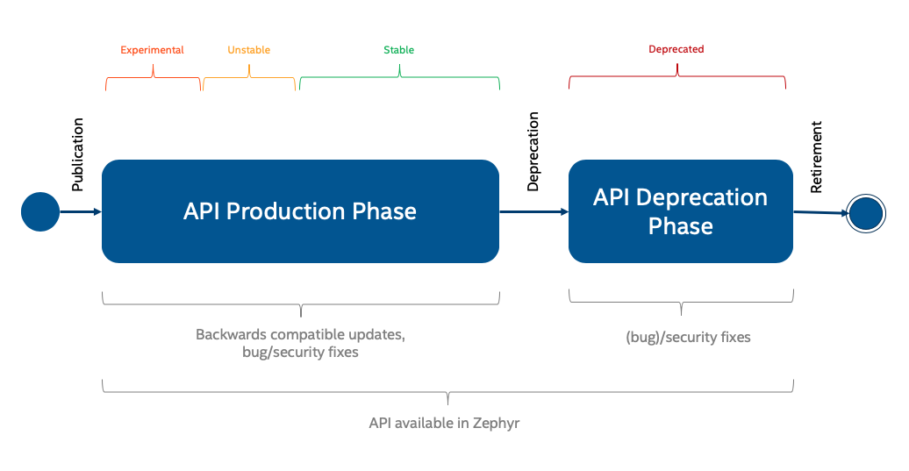

API Lifecycle
Developers using Zephyr’s APIs need to know how long they can trust that a given API will not change in future releases. At the same time, developers maintaining and extending Zephyr’s APIs need to be able to introduce new APIs that aren’t yet fully proven, and to potentially retire old APIs when they’re no longer optimal or supported by the underlying platforms.

API Life Cycle
An up-to-date table of all APIs and their maturity level can be found in the API Overview page.
Experimental
Experimental APIs denote that a feature was introduced recently, and may change or be removed in future versions. Try it out and provide feedback to the community via the Developer mailing list.
The following requirements apply to all new APIs:
Documentation of the API (usage) explaining its design and assumptions, how it is to be used, current implementation limitations, and future potential, if appropriate.
The API introduction should be accompanied by at least one implementation of said API (in the case of peripheral APIs, this corresponds to one driver)
At least one sample using the new API (may only build on one single board)
When introducing a new and experimental API, mark the API version in the headers where the API is defined. An experimental API shall have a version where the minor version is up to one (0.1.z). (see API Overview)
Unstable
The API is in the process of settling, but has not yet had sufficient real-world testing to be considered stable. The API is considered generic in nature and can be used on different hardware platforms.
When the API changes status to unstable API, mark the API version in the headers where the API is defined. Unstable APIs shall have a version where the minor version is larger than one (0.y.z | y > 1 ). (see API Overview)
Note
Changes will not be announced.
Peripheral APIs (Hardware Related)
The API shall be promoted from experimental to unstable when it has at
least two implementations on different hardware platforms.
Hardware Agnostic APIs
For hardware agnostic APIs, multiple applications using it are required to
promote an API from experimental to unstable.
Stable
The API has proven satisfactory, but cleanup in the underlying code may cause minor changes. Backwards-compatibility will be maintained if reasonable.
An API can be declared stable after fulfilling the following requirements:
Test cases for the new API with 100% coverage
Complete documentation in code. All public interfaces shall be documented and available in online documentation.
The API has been in-use and was available in at least 2 development releases
Stable APIs can get backward compatible updates, bug fixes and security fixes at any time.
In order to declare an API stable, the following steps need to be followed:
A Pull Request must be opened that changes the corresponding entry in the API Overview table
An email must be sent to the
develmailing list announcing the API upgrade requestThe Pull Request must be submitted for discussion in the next Zephyr Architecture meeting where, barring any objections, the Pull Request will be merged
When the API changes status to stable API, mark the API version in the headers where the API is defined. Stable APIs shall have a version where the major version is one or larger (x.y.z | x >= 1 ). (see API Overview)
Introducing breaking API changes
A stable API, as described above, strives to remain backwards-compatible through its life-cycle. There are however cases where fulfilling this objective prevents technical progress, or is simply unfeasible without unreasonable burden on the maintenance of the API and its implementation(s).
A breaking API change is defined as one that forces users to modify their existing code in order to maintain the current behavior of their application. The need for recompilation of applications (without changing the application itself) is not considered a breaking API change.
In order to restrict and control the introduction of a change that breaks the promise of backwards compatibility, the following steps must be followed whenever such a change is considered necessary in order to accept it in the project:
An RFC issue must be opened on GitHub with the following content:
Title: RFC: Breaking API Change: <subsystem> Contents: - Problem Description: - Background information on why the change is required - Proposed Change (detailed): - Brief description of the API change - Detailed RFC: - Function call changes - Device Tree changes (source and bindings) - Kconfig option changes - Dependencies: - Impact to users of the API, including the steps required to adapt out-of-tree users of the API to the changeInstead of a written description of the changes, the RFC issue may link to a Pull Request containing those changes in code form.
The RFC issue must be labeled with the GitHub
Breaking API ChangelabelThe RFC issue must be submitted for discussion in the next Zephyr Architecture meeting
An email must be sent to the
develmailing list with a subject identical to the RFC issue title and that links to the RFC issue
The RFC will then receive feedback through issue comments and will also be discussed in the Zephyr Architecture meeting, where the stakeholders and the community at large will have a chance to discuss it in detail.
Finally, and if not done as part of the first step, a Pull Request must be opened on GitHub. It is left to the person proposing the change to decide whether to introduce both the RFC and the Pull Request at the same time or to wait until the RFC has gathered consensus enough so that the implementation can proceed with confidence that it will be accepted. The Pull Request must include the following:
A title that matches the RFC issue
A link to the RFC issue
The actual changes to the API
Changes to the API header file
Changes to the API implementation(s)
Changes to the relevant API documentation
Changes to Device Tree source and bindings
The changes required to adapt in-tree users of the API to the change. Depending on the scope of this task this might require additional help from the corresponding maintainers
An entry in the “API Changes” section of the release notes for the next upcoming release
The labels
API,Breaking API ChangeandRelease Notes, as well as any others that are applicableThe label
Architecture Reviewif the RFC was not yet discussed and agreed upon in Zephyr Architecture meeting
Once the steps above have been completed, the outcome of the proposal will depend on the approval of the actual Pull Request by the maintainer of the corresponding subsystem. As with any other Pull Request, the author can request for it to be discussed and ultimately even voted on in the Zephyr TSC meeting.
If the Pull Request is merged then an email must be sent to the devel and
user mailing lists informing them of the change.
The API version shall be changed to signal backward incompatible changes. This is achieved by incrementing the major version (X.y.z | X > 1). It MAY also include minor and patch level changes. Patch and minor versions MUST be reset to 0 when major version is incremented. (see API Overview)
Note
Breaking API changes will be listed and described in the migration guide.
Deprecated
Note
Unstable APIs can be removed without deprecation at any time. Deprecation and removal of APIs will be announced in the “API Changes” section of the release notes.
The following are the requirements for deprecating an existing API:
Deprecation Time (stable APIs): 2 Releases The API needs to be marked as deprecated in at least two full releases. For example, if an API was first deprecated in release 4.0, it will be ready to be removed in 4.2 at the earliest. There may be special circumstances, determined by the Architecture working group, where an API is deprecated sooner.
What is required when deprecating:
Mark as deprecated. This can be done by using the compiler itself (
__deprecatedfor function declarations and__DEPRECATED_MACROfor macro definitions), or by introducing a Kconfig option (typically one that contains theDEPRECATEDword in it) that, when enabled, reverts the APIs back to their previous formDocument the deprecation
Include the deprecation in the “API Changes” of the release notes for the next upcoming release
Code using the deprecated API needs to be modified to remove usage of said API
The change needs to be atomic and bisectable
Add an entry in the corresponding release GitHub issue tracking removal of deprecated APIs. In this example in the one corresponding to the 4.2 release.
During the deprecation waiting period, the API will be in the deprecated
state. The Zephyr maintainers will track usage of deprecated APIs on
docs.zephyrproject.org and support developers migrating their code. Zephyr
will continue to provide warnings:
API documentation will inform users that the API is deprecated.
Attempts to use a deprecated API at build time will log a warning to the console.
Retired
In this phase, the API is removed.
The target removal date is 2 releases after deprecation is announced. The Zephyr maintainers will decide when to actually remove the API: this will depend on how many developers have successfully migrated from the deprecated API, and on how urgently the API needs to be removed.
If it’s OK to remove the API, it will be removed. The maintainers will remove the corresponding documentation, and communicate the removal in the usual ways: the release notes, mailing lists, Github issues and pull-requests.
If it’s not OK to remove the API, the maintainers will continue to support migration and update the roadmap with the aim to remove the API in the next release.